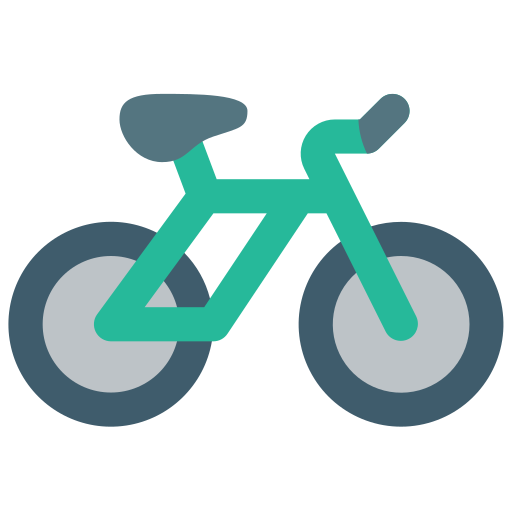

Air
Quality
Focus on the changes of the air quality and pollution in a decade.

Factor:
Clean Energy
Focus on how air quality improvement is affected by the clean energy.

Factor:
Factor:
Bike Sharing
Focus on how air quality improvement is affected by the public transportation.